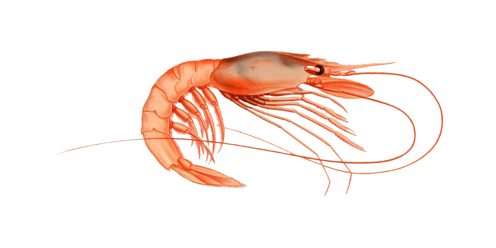

return home
Shrimp Fried Rice

image by Karen Arnold on Public Domain Pictures
license info
Description:
I first tried this dish when my mom made it. It is spicy, shrimpy,
and delightful!
Ingredients:
- rice
- shrimp
- eggs
- mushrooms
- carrots
- celery
- onion
- salt
- sesame oil
- fresh garlic
- green curry paste
Steps:
- start your preferred method of cooking rice
- dice onions, slice mushrooms, and cut carrots and celery
- heat a large pot
- add onions, mushrooms, carrots, and celery to the pot
- add shrimp
- stir in eggs
- squeeze fresh garlic into pot
- add the cooked rice to the other ingredients and stir
- add salt, sesame oil, and green curry paste to taste
- enjoy!